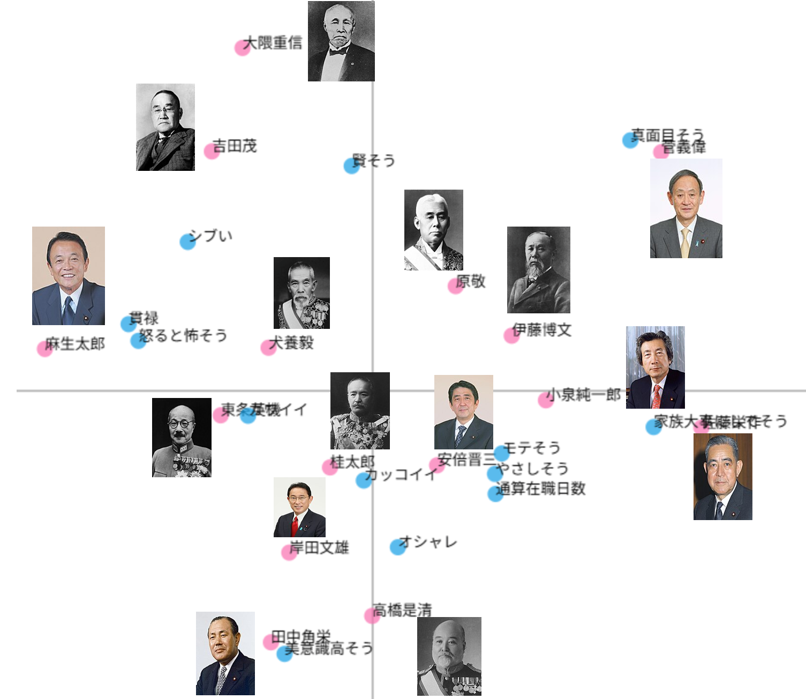
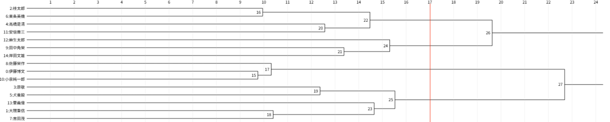
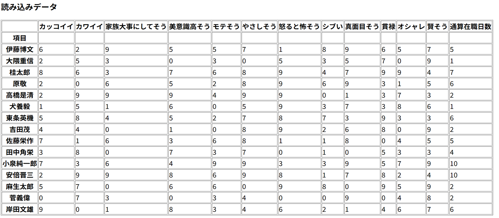

第五回コレスポンデンス分析,クラスター分析
①散布図の画像


累積寄与率は14.83%でした。
②クロス集計表のcsvファイル

僕が編集途中でcsvファイルを破損させてデータ消えてしまったのでU5とy.yの分は許してあげてください
③説明
コレスポンデンス分析では、累積寄与率は低くなってしまいましたが、麻生太郎や安倍晋三あたりは散布図に特徴がよく表せていると思います。また、伊藤博文と東条英機、麻生太郎と佐藤栄作、大隈重信と高橋是清などが正反対の位置にいるのは良く表せているとおもいます。